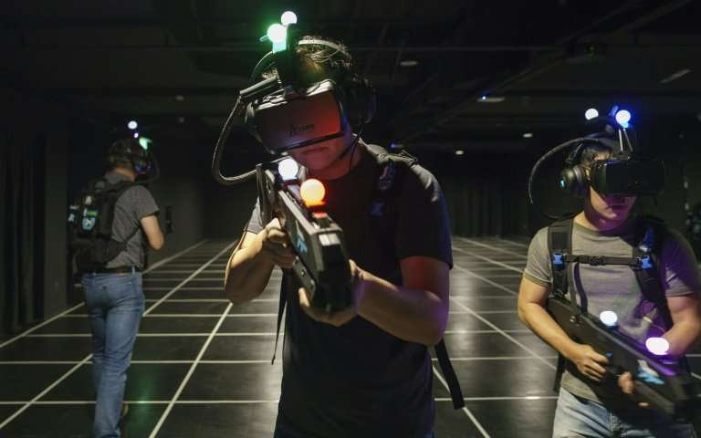

How Virtual Reality Works
So how does Virtual Reality technology work exactly. Well the most commonly used technology in Virtual Reality are Head Mounted Dispalys(HMDS). At this moment almost all VR technology on offer comes with a HMD. HMDs can be broken down into two different categories. You have Mobile HMDs and you have Stationary HMDs. Aside from HMDs there is other technology commonly used for VR. Motion controllers is another big component of VR gaming that helps the user have a more immersive experience. Rather than going into full detail of how these technologies work, I will give you a small breakdown and tell you the relevant information.
As mentioned earlier the biggest aspect of VR technology right now are HMDs, which can be broken down in to two different times. The first time is Mobile HMDs. Examples of this type of HMDs include the Google Daydream, Samsung VR and the Nintendo Lab VR Kit. What separates this from the second type of HMD is that mobile HMDs utilize head tracking technology, which is essentially technology that tracks the movement of your head as opposed to the movements of your eyes. It keeps track of the various head movements you make while you had the headset on, such as the yaw, the pitch and the roll. These HMDs carry a smartphone that serves as a display and as a data processor. Some of the current headsets allow you to use your own smartphone while others some with one embedded in the headset. The device works by keeping the mobile in a casing within the headset that your strap to your head. This is equipped with a magnet which the mobile’s sensors then use to perform magnetic head tracking.

The second type of HMDs are Stationary HMDs. What makes this type different is that it uses eye tracking, which as can be seen by name means it tracks the movements of your eyes, specifically where your eyes are pointed at for any given moment. The main idea is to turn the coordinates of your 2d gaze into a 3D vector. This is usually done by shining an IR or Infrared LED on to the users to create a reflection of your cornea. Examples of headsets that use stationary HMDs include the PlayStation VR, HRC Vive and the Occulus rift.

As previously mentioned HMDs aren’t the only piece of technology used in VR. Another big component is motion controllers. Motion controllers control a player’s hand movements and, in some cases, even body movement. While early motion control technology only allowed a user to perform simple gestures, modern technology can track a wide variety of movements made by the user. This done in a variety of different ways. Some motion controllers such as the Half Moon controller have a loop on their grip that puts the center of gravity of the device into the center of gravity of the user’s hand. While other controllers like the CyberTough II or the Striker VP use a reactive grip, which uses haptic feedback( basically the touch and motion of a user) and has a variety of sensors. Now these two are simply just the 2 major and most recognized components of VR, there is still some other hardware and a lot of software involved. This is just the surface and if you are truly interested and I recommend doing more research if you are interested.